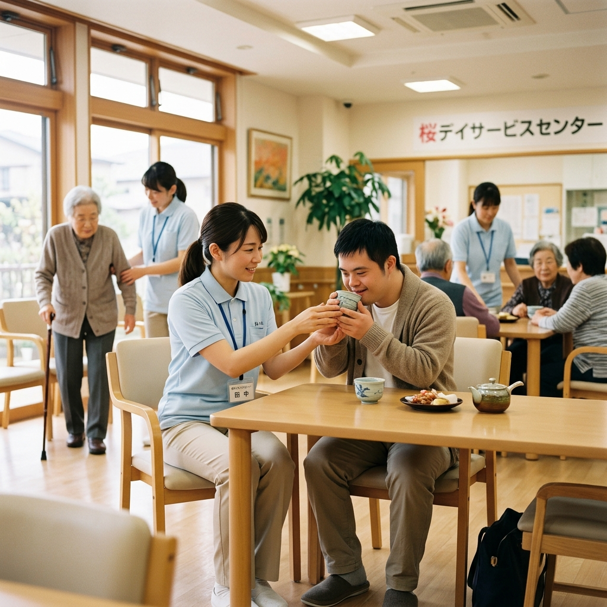
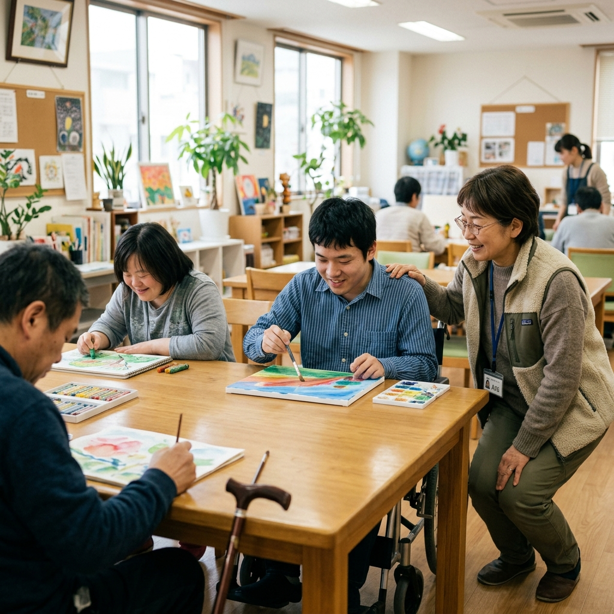
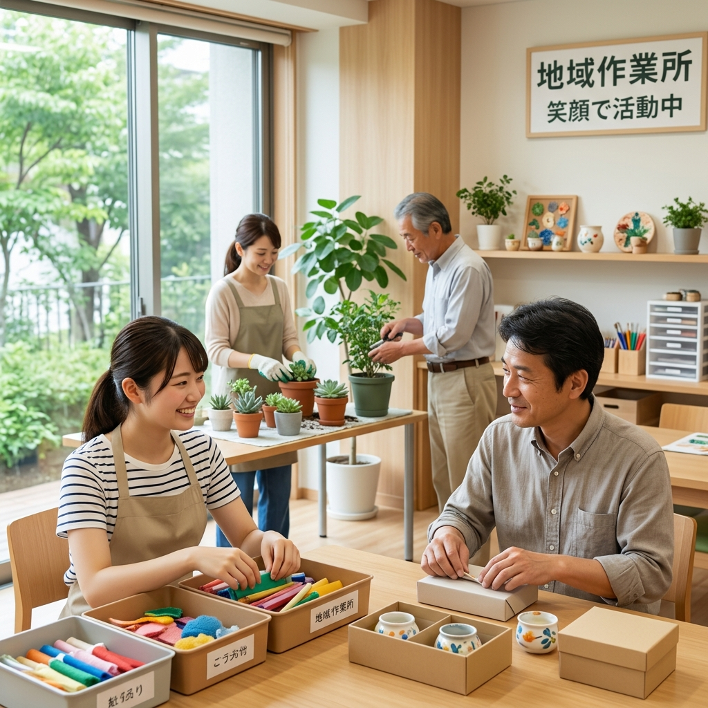
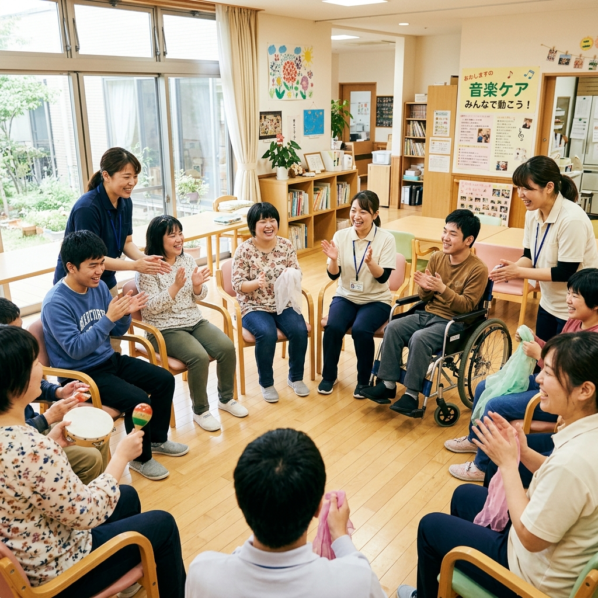

サービス内容
生活介護とは
常に介護を必要とする方に対して、昼間、入浴・排せつ・食事の介護等を行うとともに、創作的活動や生産活動の機会を提供する障害福祉サービスです。
主な活動内容

日常生活支援
食事、排泄、更衣など、日常生活を送る上で必要な支援を行います。身体機能の維持・向上を目指したサポートも行います。

創作的活動
絵画、手芸、工作など、季節に合わせた様々なアート活動を行います。表現する楽しさを味わい、豊かな感性を育みます。

生産活動
簡単な内職作業や園芸活動など、それぞれの能力に応じた作業を行います。働く喜びや達成感を感じていただけます。

集団・余暇活動
音楽療法、体操、季節の行事など、仲間と一緒に楽しむ時間を大切にします。コミュニケーションの機会を増やし、社会性を育みます。
一日の流れ
送迎・お迎え
専用の送迎車でご自宅までお迎えに上がります。車椅子対応車両も完備しています。
到着・健康チェック
施設に到着後、手洗い・うがいを行います。看護スタッフ等による毎日の体調確認をしっかりと行います。
朝の会・午前活動
一日の予定を確認し、それぞれのプログラム（創作活動、軽作業、散歩など）に分かれて活動します。
昼食準備・昼食
バランスの良い温かい食事を提供します。ご嚥下や咀嚼の状態に合わせた食形態にも対応いたします。
休憩・余暇時間
食後は各自リラックスして過ごします。テレビを見たり、音楽を聴いたり、自分のペースで休養をとります。
午後活動
全体でのレクリエーションや、音楽活動、体操など、体を動かしたり声を出したりして楽しく過ごします。
おやつ・帰りの会
おやつを食べながら今日一日の振り返りをし、明日への期待に繋げます。
送迎・帰宅
順次、送迎車でご自宅までお送りします。ご家族に一日の様子をお伝えします。
見学・ご相談を随時受け付けています
※あきる野市にお住まいで見学・利用をご検討の方へ
「どんな雰囲気なのか見てみたい」「利用について相談したい」など、まずはお気軽にお問い合わせください。
見学・お問い合わせはこちらお電話でも承ります：
000-000-0000
（※電話番号は準備中／要確認）